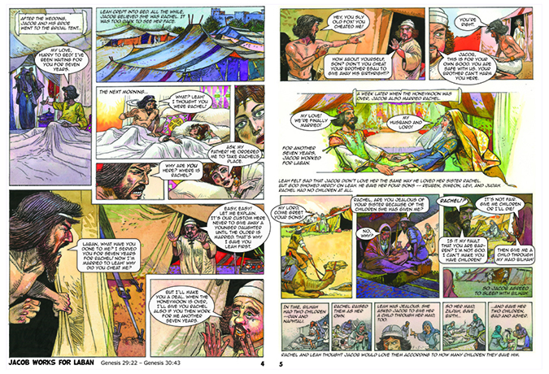
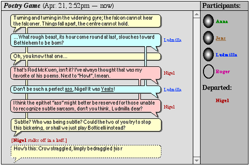
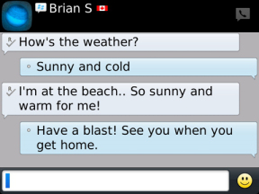

THIS WEBPAGE TALKS BRIEFLY ON THE HISTORY AND USAGE OF CHAT BUBBLE UI
(SORRY KELLY BUT U CAN'T TEXT THROUGH EXCEL)
DIFFERENT VARIATIONS OF THE ICONIC SPEECH BUBBLE
OFTEN USED IN COMIC BOOKS TO SHOW THAT SOMEBODY IS SPEAKING. WHILE ALSO ALLOWING FOR CONVERSATIONS TO BE READ EASIER.

COMIC BOOK LAYOUT
SPEECH BUBBLES MADE IT EASIER TO DISTINGUISH DIALOGUE FROM OTHER TEXT

OMG THIS THING WAS SO ANNOYING.
CHAT BUBBLES WERE SEEN A LOT IN THE EARLY INTERNET AND ON EARLY COMPUTER PROGRAMS.
AOL INSTANT MESSENGER
CHAT BUBBLES CAN HELP A CONVERSATION MOVE MORE SMOOTHLY. NOTICE HOW JUMBLED TEXT CAN GET IN PROGRAMS SUCH AS AIM.

SOME EXAMPLES OF EARLY CHAT BUBBLE UI UP TO IMESSAGE ON THE FIRST IPHONE
WHEN WORKING ON ICHAT FOR APPLE, JENS ALFKE TURNED TO SPEECH BUBBLES TO VISUALIZE THE CHATS HAPPENING WITHIN THE APPLICATION.

JENS ALFKE CONCEPT SKETCHES
IOS, WINDOWS, AND ANDROID TEXT UI
WITH THE INTRODUCTION OF SMART PHONES, THE CHAT BUBBLE WAS IMPLEMENTED INTO MOST BRANDS' SMS APPLICATIONS.
EARLY TEXT MESSAGE UI MIMICKED THAT OF EMAILS

THE CHAT BUBBLE TAKING ON NEW FORMS
MORE RECENTLY WITH THE RELEASE OF APPLE'S MOST RECENT IOS. CHAT BUBBLES CAN NOW DO MUCH MORE THAN JUST RELAY TEXT.
3RD PARTY APPS HAVE ADOPTED THE MULTI-FUNCTIONAL CHAT BUBBLE
TODAY, IT'S HARD NOT TO SEE CHAT BUBBLES IMPLETEMENTED INTO APPLICATIONS.
CHAT BUBBLES BEING USED BY BOTS TO GUIDE THE USER
THE PALACE
SUPPOSED FIRST TEXT MESSAGE SENT ON IPHONE

BLACKBEERY TEXT UI
EMAIL MY HEART BY BRITNEY SPEARS

← BACK